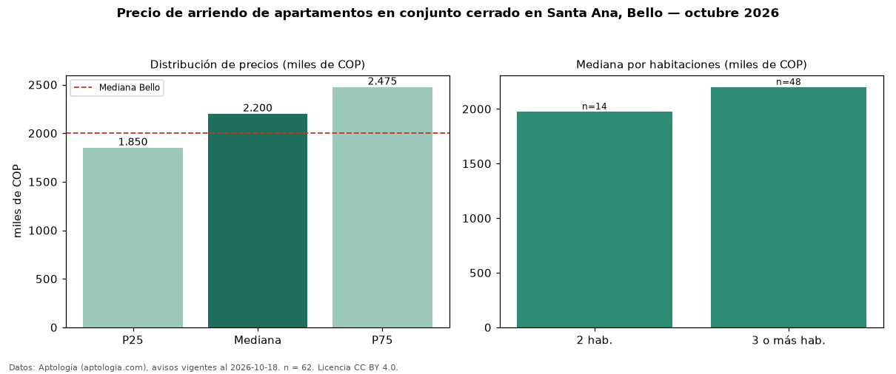

Precio de arriendo de apartamentos en conjunto cerrado en Santa Ana, Bello — octubre 2026
Con 62 avisos vigentes, el canon mediano de apartamentos en conjunto cerrado en arriendo en Santa Ana, Bello es COP 2,20 millones al mes. Eso es 3 % menos que la mediana de todos los apartamentos en arriendo de Santa Ana (COP 2,27 millones, n = 106); este segmento reúne el 58 % de esos avisos. Por metro cuadrado, la mediana es COP 34.733/m² al mes (n = 62), 4 % por debajo del conjunto de referencia (COP 36.000/m²). El área mediana anunciada es 62 m². El segmento con más oferta es el de 3 o más habitaciones (48 avisos, mediana COP 2,20 millones); pasar de 2 habitaciones a 3 o más habitaciones cambia la mediana +11 %. El estrato más frecuente es 4 (68 % de los avisos con estrato). La mediana de todos los apartamentos en arriendo de Bello es COP 2,00 millones (+10 % de diferencia). 76 % de los avisos con el dato declara parqueadero. Datos: Aptología (aptologia.com), CC BY 4.0 — https://www.aptologia.com/arriendo/bello. Archivos: PDF, CSV con las cifras y gráfica PNG.

| Avisos únicos | 62 |
|---|---|
| Percentil 25 | COP 1.850.000 |
| Mediana | COP 2.200.000 |
| Percentil 75 | COP 2.475.000 |
| Mediana por m² | COP 34.733 |
Fuente: avisos vigentes de portales inmobiliarios recopilados por Aptología, deduplicados (mínimo 30 avisos únicos por celda). Precios pedidos, no cerrados. Fecha: 2026-10-18.